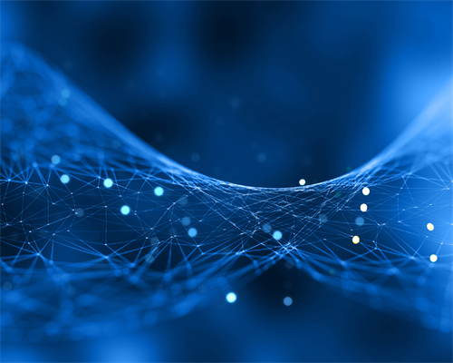

A Mostra de Tecnologia e Inovação 2026 reúne projetos desenvolvidos pelos alunos nas áreas de programação, desenvolvimento web, inteligência artificial e sistemas digitais. Durante o evento, os visitantes poderão conhecer os projetos, acompanhar apresentações e conversar com seus desenvolvedores.
Conheça também o site do Centro Paula Souza
| PROGRAMAÇÃO GERAL | |||
|---|---|---|---|
| Horário | Atividade | Local | Responsável |
| 08h00 | Abertura do evento | Auditório | Coordenação |
| 09h00 | Apresentação de projetos Web | Laboratório 1 | Prof. André |
| 10h30 | Projetos de Inteligência Artificial | Laboratório 2 | Prof. Mariana |
| 13h30 | Projetos de Aplicativos | Laboratório 1 | Prof. Carlos |
| 15h00 | Premiação e encerramento | Auditório | Comissão Organizadora |
| Apresentações dos Projetos | ||
|---|---|---|
| Período | Horário | Projeto |
| Manhã | 09h00 | Sistema de Controle de Estoque |
| 10h30 | Assistente Virtual Educacional | |
| Tarde | 13h30 | Aplicativo de Gestão Financeira |
| 15h00 | Sistema de Agendamento | |
conheça os projetos
Contatoentre em contato com a equipe organizacional
saiba maismais sobre Tecnologia
© 2026 Mostra de Tecnologia e Inovação. Todos os direitos reservados.
Voltar ao início